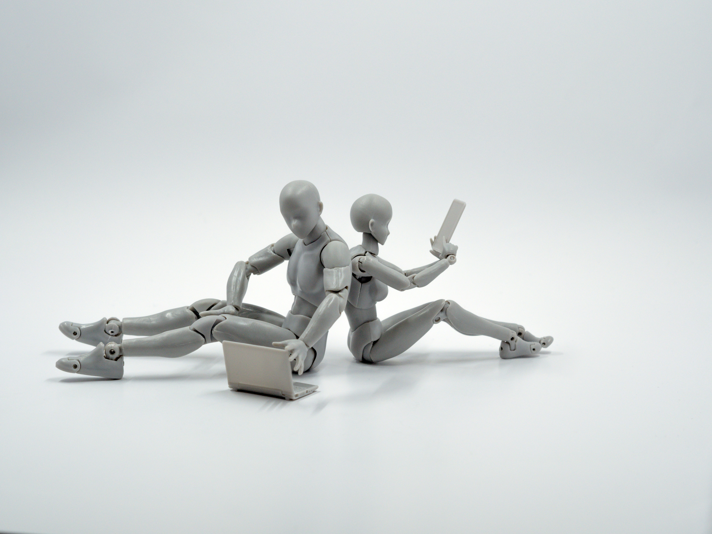

    <div class="container mt-1 p-0"> 
          <!-- Page content-->
        <div class="container mt-5">
            <div class="row">
                <div class="col-lg-8">
                    <!-- Post content-->
                    <article>
                        <!-- Post header-->
                        <header class="mb-4">
                            <!-- Post title-->
                            <h1 class="fw-bolder mb-1">Biohäkkimine ja inimvõimete laiendamine: Kas tulevikus oleme küberinimesed?</h1>
                            <!-- Post meta content-->
                            <div class="text-muted fst-italic mb-2">Postitatud 20.03.25
                        </header>
                        <!-- Preview image figure-->
                        <figure class="mb-4"></figure>
                        <!-- Post content-->
                        <section class="mb-5">
                            <p class="fs-5 mb-4">Biohäkkimine ehk inimese bioloogiliste võimete täiustamine tehnoloogia abil on kiiresti kasvav valdkond. Inimesed siirdavad endale kiipe, arendavad aju-arvuti liideseid ja katsetavad geenitehnoloogiat, et muuta end efektiivsemaks ja tervemaks.</p>
                            <p class="fs-5 mb-4">Biohäkkimine ulatub lihtsatest terviselisanditest ja nutikelladest kuni keeruliste tehnoloogiateni, nagu neuraalsed implantaadid ja geenitöötlus.</p>
                            <h2 class="fw-bolder mb-4 mt-5">Tähtsamad arengud:</h2>
                            <p class="fs-5 mb-4">Neuralink – Elon Muski projekt, mille eesmärk on ühendada inimese aju otse arvutiga.</p>
                            <p class="fs-5 mb-4">CRISPR geenitehnoloogia – võimaldab muuta DNA-d ja ravida geneetilisi haigusi.</p>
                            <p class="fs-5 mb-4">RFID- ja NFC-kiibid – inimesed siirdavad kätesse kiipe, et avada uksi või teha makseid.</p>
                        </section>
                        <hr>
                        <!-- Kategooriad -->
                        <p class="text-primary"><i>Kategooriad: tehnoloogia, areng, maailm</i></p><br>
                        <!-- Nupud -->
                        <a class="badge bg-secondary text-decoration-none link-light" href="?page=post3">Eelmine postitus
                        <a class="badge bg-secondary text-decoration-none link-light disabled" href="?page=post5">Järgmine postitus</a>
                    </article>


    </div>
